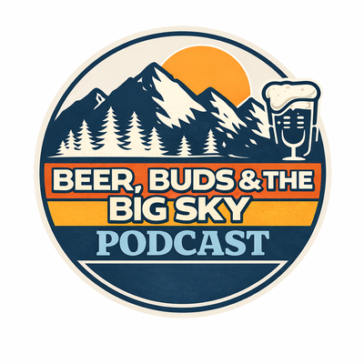

Redistributing dark money one pint at a time.
Montana's most transparent shadowy influence operation.
About Us
Money influences politics. Everybody knows it. Nobody likes it. Nothing seems to stop it. Beer helps. While other PACs hide behind shell companies and 501(c)(4)s, we proudly disclose everything: where the money comes from, where it goes, and which brewery it went to.
We tell you exactly where the money comes from. Mostly because the lawyers said the alternative was "the normal way," and that felt off-brand.
We tell you exactly where the money goes. Spoiler: a concerning percentage of it is fermented.
Because political discourse is easier with a cold one. This is our most rigorously enforced core value.
Paid for by Montana Transparent Dark Money PAC. Not authorized by any candidate, committee, or adult supervision.
Donor Disclosure
They asked us not to. We did it anyway. That's the whole bit.
Definitely Not A Shell Co., LLC
$47,000
Wired from "somewhere." Return address: a P.O. box inside another P.O. box.
Big Huckleberry
$12,500
Jam industry interests. They know what they did.
A Guy Named Dale
$40
Cash, in a bar. Dale believes in us. We believe in Dale.
Citizens for Citizens Citizen Fund
$88,000
A fund funded by another fund, which is funded by a foundation. It's funds all the way down.
Audited annually by whoever is least busy at the bar.
Billionaires to beer. The thesis statement.
The Issues
Firmly. Loudly. Occasionally near a tap.
ISSUE 01
We strongly support comprehensive campaign finance reform, and we will continue accepting unlimited contributions until it passes. Somebody has to keep the pressure on.
Our stance: Yes, but make it ironic
ISSUE 02
If a fake PAC run on beer money can disclose every dollar, the people actually running things can manage it too. We've lowered the bar specifically so others can clear it.
Our stance: Do what we do, unironically
ISSUE 03
We are against dark money in politics. We are also made entirely of it. We contain multitudes, and the multitudes are well hydrated.
Our stance: Complicated, like Montana weather
This issues page paid for by Issue 03.
The Beer Caucus

Political discourse is easier with a cold one. Join the caucus: listen to the podcast, crack a Montana IPA, and debate campaign finance with people you'd actually want to share a table with. Quorum is two people and a six-pack.
Listen to the PodcastThe Beer Caucus does not endorse candidates. It endorses hops.
Official Merch
The Disclosure TeeSoft cotton. Hard truths.
The Yard SignLegally ambiguous. Aesthetically bold.
The Caucus KoozieKeeps your beer cold and your money dark.
All merch proceeds disclosed, then immediately spent at the brewery.
Contact
Got a hot tip on dark money? Want the PAC at your barbecue? Need to confess a donation? Our inbox is as open as our books.
Email the PACAll emails are read aloud at the Beer Caucus. You've been warned.
Routing funds through several intermediary organizations for maximum transparency...